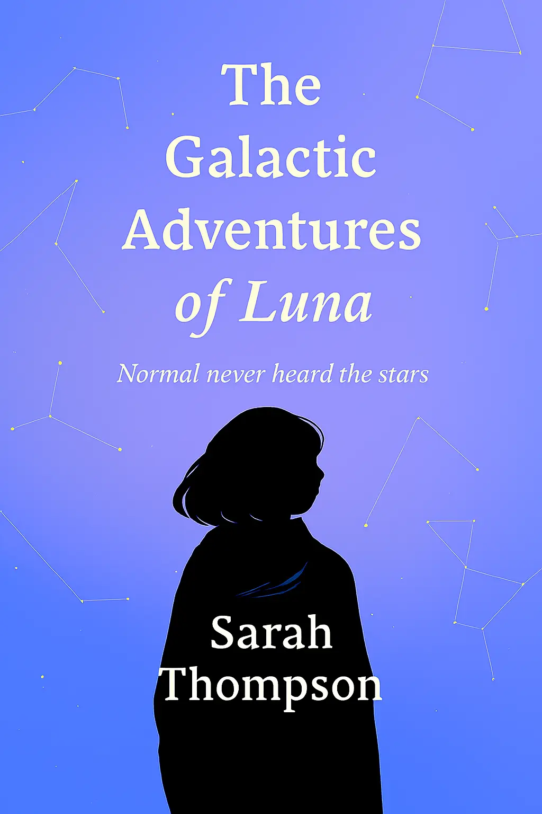
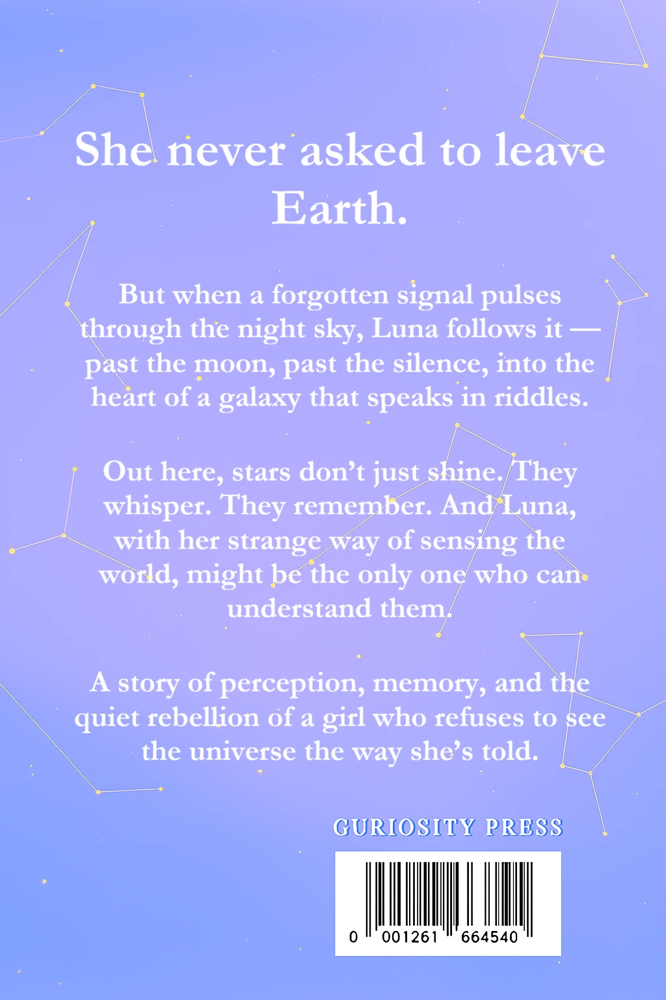

Find Your Child's Next Favourite Read
We've put together a list of books that are worth every page. It’s tough to know what’s really behind the cover, so we’ve done the hard work of finding the best stories that captivate and inspire young readers. Dive in and discover your child’s next favourite read!
Our Top 3
The Galactic Adventures of Luna
Luna doesn’t chase stars — she interprets them. When a mysterious signal draws her beyond Earth’s orbit, she finds herself navigating a galaxy of forgotten dreams, cryptic transmissions, and a truth only she can decode. With her senses tuned to the strange rhythms of space, Luna must decide whether the stars are guiding her forward… or calling her home.
The Galactic Adventures of Luna
⭐⭐⭐⭐⭐ “I picked this up expecting a quirky space adventure, but Luna surprised me. The writing is lyrical without being overdone, and the story has this quiet emotional pull that sneaks up on you. I loved how the sci-fi elements were woven into something deeply personal — it’s not just about stars and signals, it’s about memory, intuition, and finding your way when everything feels unfamiliar. I’ll be thinking about that ending for a while.” — Maya T., reviewer at The Orbit Shelf